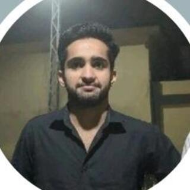

Cloud Security Misconfiguration Checker
Python tool that scans cloud security group rules and flags public exposure such as open SSH or RDP ports.

BE Information Security, Semester 3 · NUST, Rawalpindi
I am a BE Information Security student at NUST with a strong interest in infrastructure, networking and cloud. I like understanding how systems are built, how they connect, and how they can be secured, and I enjoy using AI tools to automate repetitive work. I hold the AWS Certified Cloud Practitioner credential and Cisco certifications in networking basics and cybersecurity. I have also worked on identity and access management, and I lead a team in capture-the-flag competitions, where we placed 162nd globally out of about 1,100 teams and first in Pakistan at Hi Cyber Con CTF 2026. I am looking for internships in cloud security and infrastructure.
Python tool that scans cloud security group rules and flags public exposure such as open SSH or RDP ports.
Installed and configured a WordPress site on a local XAMPP stack to learn how a web server, PHP and database work together.
Analysed a USB image in Autopsy and produced a forensic report for an insider-data case.
Worked on an IGA platform covering identity lifecycle, access control and auditing.
Led team The Arachnid Sentries: 49 of 69 challenges solved, 162nd globally and 1st in Pakistan.